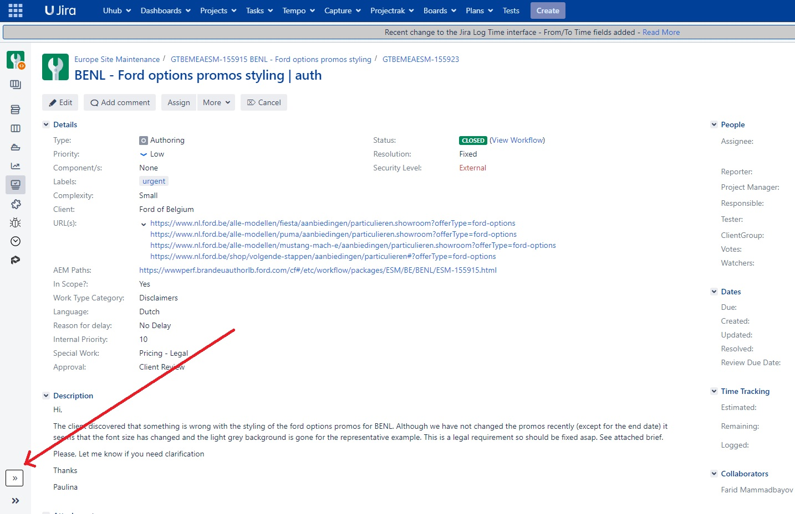

Every new JIRA ticket page you open from now will have an extra section in bottom left that you can recogrnize by ">>"
Application scans the whole page and automatically saves info needed, like market country, ticket #, description.
You still have control and can edit text fields in case it makes a mistake
First of all, this is just a robot on rails, if one of the steps fails, the program can't continue.
Obviously I tried to find workarounds, but still.
Do not change tabs while it's creating the workflow, it likes the attention
Application CAN NOT pick the submarket for Belgium and Switzerland, it automatically defaults to NL for Belgium and DE for Switzerland
For CH and BE you have to check the submarket!
Enjoy and contact Farid Mammadbayov for extra info.
Also check out my other extension that is essentially old scripts on steroids.